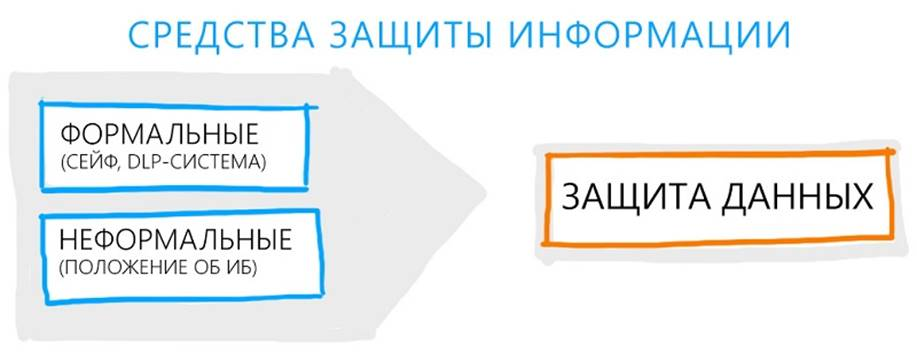

Средства защиты информации
Для целей разработки концепций ИБ-защиты средства защиты информации принято делить на нормативные (неформальные) и технические (формальные).
Неформальные средства защиты – это документы, правила, мероприятия, формальные – это специальные технические средства и программное обеспечение. Разграничение помогает распределить зоны ответственности при создании ИБ-систем: при общем руководстве защитой административный персонал реализует нормативные способы, а IT-специалисты, соответственно, технические.
Основы информационной безопасности предполагают разграничение полномочий не только в части использования информации, но и в части работы с ее охраной. Подобное разграничение полномочий требует и нескольких уровней контроля.

Формальные средства защиты
Широкий диапазон технических средств ИБ-защиты включает:
Физические средства защиты. Это механические, электрические, электронные механизмы, которые функционируют независимо от информационных систем и создают препятствия для доступа к ним. Замки, в том числе электронные, экраны, жалюзи призваны создавать препятствия для контакта дестабилизирующих факторов с системами. Группа дополняется средствами систем безопасности, например, видеокамерами, видеорегистраторами, датчиками, выявляющие движение или превышение степени электромагнитного излучения в зоне расположения технических средств снятия информации, закладных устройств.
Аппаратные средства защиты. Это электрические, электронные, оптические, лазерные и другие устройства, которые встраиваются в информационные и телекоммуникационные системы. Перед внедрением аппаратных средств в информационные системы необходимо удостовериться в совместимости.
Программные средства – это простые и системные, комплексные программы, предназначенные для решения частных и комплексных задач, связанных с обеспечением ИБ. Примером комплексных решений служат DLP-системы и SIEM-системы: первые служат для предотвращения утечки, переформатирования информации и перенаправления информационных потоков, вторые – обеспечивают защиту от инцидентов в сфере информационной безопасности. Программные средства требовательны к мощности аппаратных устройств, и при установке необходимо предусмотреть дополнительные резервы.
К специфическим средствам информационной безопасности относятся различные криптографические алгоритмы, позволяющие шифровать информацию на диске и перенаправляемую по внешним каналам связи. Преобразование информации может происходить при помощи программных и аппаратных методов, работающих в корпоративных информационных системах.
Все средства, гарантирующие безопасность информации, должны использоваться в совокупности, после предварительной оценки ценности информации и сравнения ее со стоимостью ресурсов, затраченных на охрану. Поэтому предложения по использованию средств должны формулироваться уже на этапе разработки систем, а утверждение должно производиться на том уровне управления, который отвечает за утверждение бюджетов.
В целях обеспечения безопасности необходимо проводить мониторинг всех современных разработок, программных и аппаратных средств защиты, угроз и своевременно вносить изменения в собственные системы защиты от несанкционированного доступа. Только адекватность и оперативность реакции на угрозы поможет добиться высокого уровня конфиденциальности в работе компании.
Неформальные средства защиты
Неформальные средства защиты группируются на нормативные, административные и морально-этические. На первом уровне защиты находятся нормативные средства, регламентирующие информационную безопасность в качестве процесса в деятельности организации.
Эта категория средств обеспечения информационной безопасности представлена законодательными актами и нормативно-распорядительными документами, которые действуют на уровне организации.
В мировой практике при разработке нормативных средств ориентируются на стандарты защиты ИБ, основный – ISO/IEC 27000. Стандарт создавали две организации:
Актуальная версия ISO/IEC 27000-2016 предлагают готовые стандарты и опробованные методики, необходимые для внедрения ИБ. По мнению авторов методик, основа информационной безопасности заключается в системности и последовательной реализации всех этапов от разработки до пост-контроля.
Для получения сертификата, который подтверждает соответствие стандартам по обеспечению информационной безопасности, необходимо внедрить все рекомендуемые методики в полном объеме. Если нет необходимости получать сертификат, в качестве базы для разработки собственных ИБ-систем допускается принять любую из более ранних версий стандарта, начиная с ISO/IEC 27000-2002, или российских ГОСТов, имеющих рекомендательный характер.
По итогам изучения стандарта разрабатываются два документа, которые касаются безопасности информации. Основной, но менее формальный – концепция ИБ предприятия, которая определяет меры и способы внедрения ИБ-системы для информационных систем организации. Второй документ, которые обязаны исполнять все сотрудники компании, – положение об информационной безопасности, утверждаемое на уровне совета директоров или исполнительного органа.
Кроме положения на уровне компании должны быть разработаны перечни сведений, составляющих коммерческую тайну, приложения к трудовым договорам, закрепляющий ответственность за разглашение конфиденциальных данных, иные стандарты и методики. Внутренние нормы и правила должны содержать механизмы реализации и меры ответственности. Чаще всего меры носят дисциплинарный характер, и нарушитель должен быть готов к тому, что за нарушением режима коммерческой тайны последуют существенные санкции вплоть до увольнения.
В рамках административной деятельности по защите ИБ для сотрудников служб безопасности открывается простор для творчества. Это и архитектурно-планировочные решения, позволяющие защитить переговорные комнаты и кабинеты руководства от прослушивания, и установление различных уровней доступа к информации. Важными организационными мерами станут сертификация деятельности компании по стандартам ISO/IEC 27000, сертификация отдельных аппаратно-программных комплексов, аттестация субъектов и объектов на соответствие необходимым требованиям безопасности, получений лицензий, необходимых для работы с защищенными массивами информации.
С точки зрения регламентации деятельности персонала важным станет оформление системы запросов на допуск к интернету, внешней электронной почте, другим ресурсам. Отдельным элементом станет получение электронной цифровой подписи для усиления безопасности финансовой и другой информации, которую передают государственным органам по каналам электронной почты.
Морально-этические меры определяют личное отношение человека к конфиденциальной информации или информации, ограниченной в обороте. Повышение уровня знаний сотрудников касательно влияния угроз на деятельность компании влияет на степень сознательности и ответственности сотрудников. Чтобы бороться с нарушениями режима информации, включая, например, передачу паролей, неосторожное обращение с носителями, распространение конфиденциальных данных в частных разговорах, требуется делать упор на личную сознательность сотрудника. Полезным будет установить показатели эффективности персонала, которые будут зависеть от отношения к корпоративной системе ИБ.